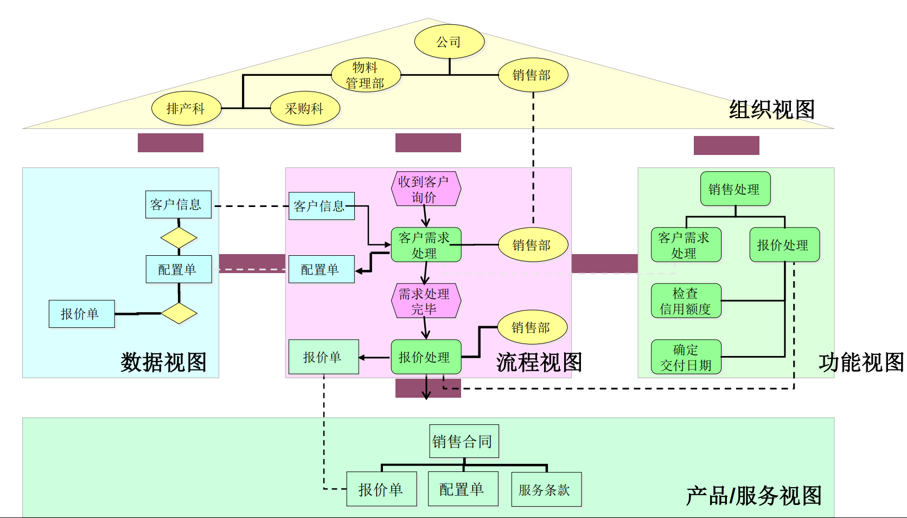
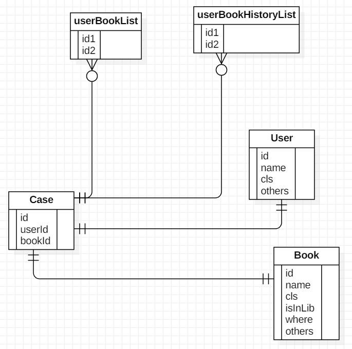
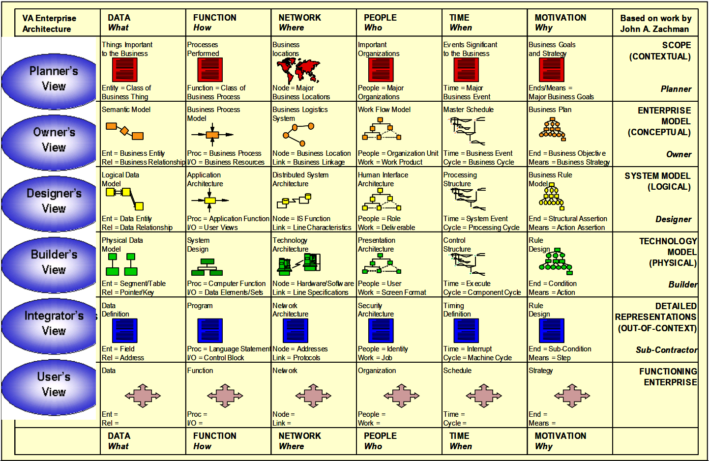
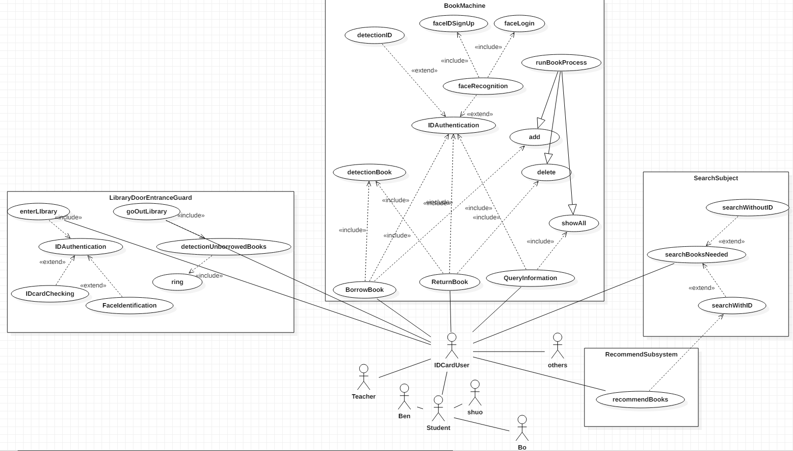
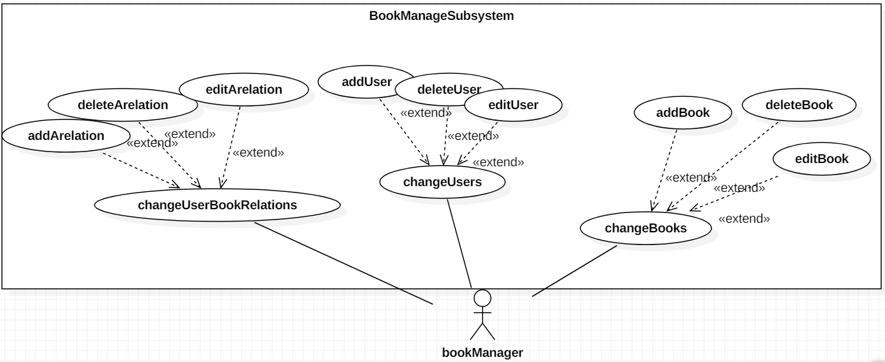
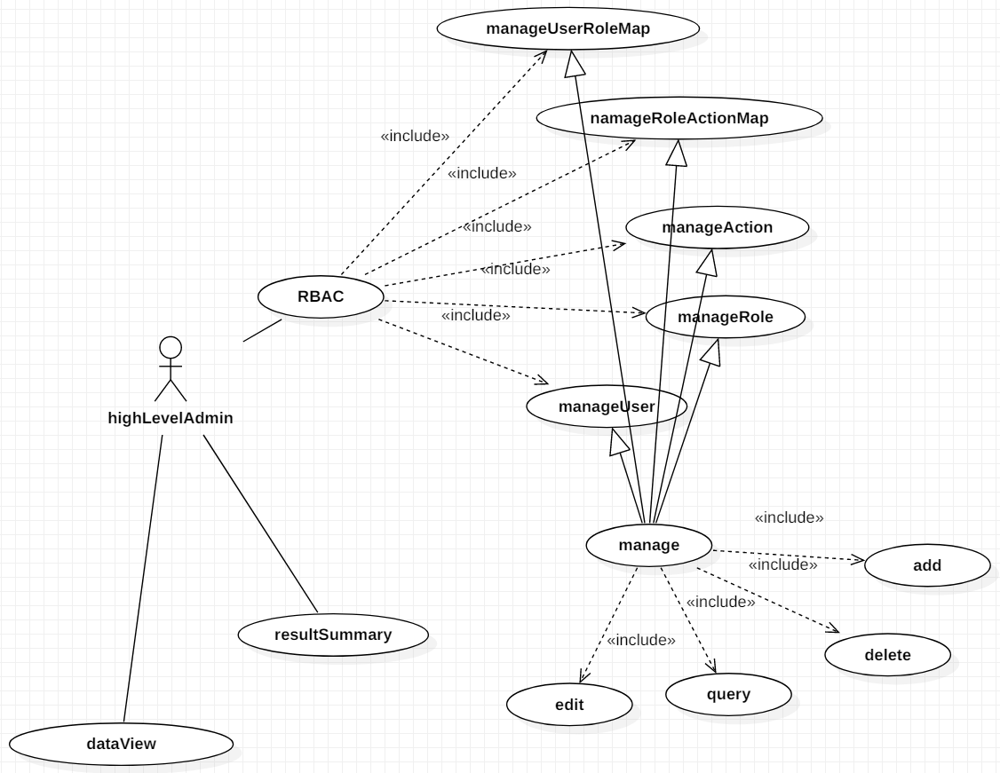

企业架构与软件系统分析设计结课作业——一个山寨版创新港图书馆管理系统的设计
Table of Contents
1. 基于ARIS HOUSE MODEL的需求分析、角色定位和方案设计
首先尝试使用ARIS HOUSE模型进行该图书馆管理系统的设计。如下图所示，ARIS房子模型是以组织角色为主导的系统架构设计方案，该方案首先确定系统的组织，以形成组织视图，在系统使用者和系统需求（即所提供服务）得到确认之后，通过细化系统中涉及到的数据、功能、流程来完成对整个系统结构的设计。本章节将依循该过程，依照上一章提供的用户组织及业务需求进行初步的系统设计。

1.1. 组织视图：用户及用户间关系的确认与分析
组织视图是ARIS模型的核心，只有确认了系统的使用者，才能对数据、功能、流程、服务进行合理的划分和定义。本图书馆管理系统中所涉及的目标用户主要包括：
- 图书馆使用用户。这些使用用户是图书馆的主要面向对象，它们进出图书馆，进行阅读、自习、借书、还书等等操作，它们相当于是图书馆的主要受体，依照身份的不同，这些用户可以划分为以下几类：
- 学校老师。学校的授课教师。
- 校外人员。如外校学生、前来交流的老师等。
- 学生。主要受体，包括以下几类：
- 本科生。这些学生的数量较多，可以继续细分。
- 研究生。可以继续细分。
- 博士生。可以继续细分。
- 图书馆管理员。主要用以进行人工图书馆业务的办理。如个别书籍无法被借出，可在图书馆管理员处进行人工借阅；当一本书还书超时，需要支付惩罚时，可通过图书馆管理员进行特殊的人工处理等等。
- 系统管理员。系统管理员用以管理整个图书馆系统，如大屏的可视化，每个用户的权限设置，进书、出书等等。
针对这些目标用户，可以发现它们之间的如下关系：
- 在划分上，三大用户群体之间耦合性较低，主要的耦合性体现在图书管理员、系统管理员也可能是图书馆使用用户的一员，该问题可通过建立不同的账号解决。整体上，这三类群体的业务之间几乎不具有耦合关系，因此，整体的系统可以简单划分为三个相对较为独立的子系统；
- 对于图书馆使用用户，其包含的各类用户之间具有极强的业务相关性，仅仅在一些系统超参数，如最多可借阅的书籍数目上有区别，因此系统应当足够灵活使之可以满足这些需求。
1.2. 服务视图：业务需求的确认
当确认了目标用户之后，就可以着手进行服务视图的建立。下面是具体的角色-服务对应关系。
- 图书馆使用用户的业务：
- 图书馆门禁相关。主要处理图书馆的门禁情况，即一个人有没有权限进入图书馆，有没有权限出去等等。
- 进门认证；
- 出门时所有携带书籍均办理借阅的认证；
- 图书馆书籍处理。
- 借书
- 还书
- 账户查询
- 图书馆搜索相关。依照不同关键字和查询方式进行图书库馆藏的查询。
- 图书推荐相关。依照用户的借阅习惯进行个性化推荐。
- 图书馆门禁相关。主要处理图书馆的门禁情况，即一个人有没有权限进入图书馆，有没有权限出去等等。
- 图书馆管理员的业务：
- 修改用户借阅还书相关信息
- 修改某图书信息
- 修改借阅动作
- 系统管理员的业务需求：
- 管理用户（使用用户、图书管理员）信息
- 管理图书信息
- 管理推荐、可视化
- 管理权限动作
1.3. 流程试图：从用户到服务的整体流程
在确认了用户及用户的业务需求之后，便可进行系统流程的设计，并基于用例图设计生成UML活动图。首先对涉及到的系统流程进行分析：
- 书籍处理。还书借书流程；
- 目标用户：图书馆使用用户；
- 子流程：
- 借书
- 还书
- 借书-还书
- 借书逾期还书
- 查看书籍信息
- 门禁处理。
- 目标用户：图书馆使用用户；
- 子流程：
- 持卡进入；
- 人脸识别进入；
- 不携带书籍出；
- 携带已办理手续书籍出；
- 携带部分未办理手续书籍出；
- 特殊事件处理
- 目标用户：图书馆管理员
- 子流程：
- 借书；
- 还书；
- 修改用户的借书还书信息；
- 修改书籍的被借被还信息；
- 数据分析与可视化。
- 依照用户的借阅习惯推荐一本书；
- 依照所有用户的借阅特点生成分析结果；
- 将分析结果进行可视化展示；
1.4. 数据视图：数据库的设计
现以数据模型下的UML视图为示例进行数据库的设计。核心数据库的设计较为简单，主要关系的对象有三个：用户、书籍、用户与书籍关联的事例。下图是一个简单的UML数据库设计表：

从该表中可以看出，主要的是借阅记录，而借阅记录由一条条的事例组成，事例包含了用户和书籍的主键。
1.5. 功能视图：功能模块的定义及其相关逐渐调用关系的确认
除去以上诸节所述的组织、业务、流程、数据之外，另外一个需要详细考虑的视图是功能模块。功能是将业务和流程静态化之后的结果，也是对业务和流程进行拆分所产生的更细粒度的表达。功能模板重点强调定义和实现需要执行的各个功能单元，并在此基础上明确这些功能单元之间的调用关系。本系统中所涉及到的主要功能单元模块如下：
- 进门认证
- 基于ID卡的身份识别；
- 基于人脸的身份识别；
- 出门认证
- 检验一本书是否被借阅的函数；
- 响铃；
- 借书
- 书籍识别
- 基于ID卡的身份识别；
- 基于人脸的身份识别；
- 书籍身份信息绑定；
- 还书
- 书籍识别；
- 查询书籍身份绑定信息；
- 书籍身份解绑；
- 账户查询
- 一些查询相关的操作；
- 搜索
- 检索算法
- 数据库查询函数；
- 推荐
- 推荐算法；
- 推荐数据整理；
- 修改借阅还书信息
- 查询借阅还书信息；
- 修改借阅还书信息；
- 修改图书信息
- 修改借阅动作
- 管理用户信息
- 增加用户
- 删除用户
- 编辑用户
- 查询用户
- 管理图书信息
- 添加图书
- 删除图书
- 编辑图书
- 查询图书
- 权限
- 管理角色
- 增加角色
- 编辑角色
- 删除角色
- 查询角色
- 管理动作
- 增加角色
- 编辑角色
- 删除角色
- 查询角色
- 管理用户-角色配置
- 增加一条新的用户-角色映射
- 修改已有的映射
- 查询映射
- 删除一条映射
- 管理角色-动作配置
- 增加一条新的角色-动作映射
- 修改已有的映射
- 查询映射
- 删除一条映射
- 管理角色
- 可视化
- 数据分析算法
- 可视化技术
上述功能模块是针对不同业务所罗列而得的，其对于实际的代码撰写仍具有较粗的粒度，比如上述描述的任何一个类（或函数），都没有对其输入参数、输出参数和状态进行表达，后续章节将会对其进行细化。总体而言，以上即为基于ARIS进行系统模型构建的全部过程。下面将针对上述过程中的疏漏，使用Zachman框架进行补充和扩展。
2. 对上述系统设计的补充——Zachman Framework下的增补
针对实际的图书馆场景，ARIS模型的设计方式并非完美无缺，因此，本章节尝试在之前图书馆管理系统设计方案的基础上基于zachman框架进行补充。Zachman框架是由约翰 扎科曼（John Zachman ）在1987年创立的全球第一个企业架构理论，也是所有企业架构理论的源泉。 一般认为，Zachman框架（Zachman framework）是一种逻辑结构，它旨为信息技术企业提供一种可以理解的信息表述。它可以对企业信息按照要求分类和从不同角度进行表示。Zachman框架的创始人John Zachman早在1987年就提出了这种思想，它全称为企业架构和企业信息系统结构架构(Zachman Framework for Enterprise Architecture and Information Systems Architecture)。Zachman框架提炼和吸收了传统方法中的一些精髓，它是一款独立于信息企业所使用的工具的平台。它可以根据抽象规则定义企业信息的一个方面。
一般而言，zachman框架是一个如下图所示的6*6的矩阵，其中每行包括了范围、商业模式、系统模式、技术模式、组件、工作系统等六个层次，每列包含角色、需求、时序、地点、目的和实现方式等六个系统侧面。通过这六种方式，zachman模型达成了一种全面、综合、复杂的系统建模。

下一章节将首要分析在基于ARIS进行建模时有哪些地方已经被考虑在内了。
2.1. What，How，Who，When，Why? 不同视角下的已有模块的分析
按照每列的形式来看，数据、功能、角色、时间序列（流程）都被考虑在内了，唯有动机和地点不够明确。考虑到动机无法作为图书馆管理系统的有效建模工具，所以有关动机层面的辅助信息难以被考虑在内。然而，地点却是本系统不得不需要考虑的一环，下面对其进行简单介绍。
2.2. Where？
图书馆管理系统在地点上涉及到多个终端，并存在与服务器的交互问题，主要地点汇总如下：
- 位于图书馆门口终端上的门禁子系统。
- 位于图书馆内的数据可视化终端。
- 位于图书馆内嵌入式仪器的书籍业务处理子系统；
- 位于图书馆内的检索电脑；
- 位于机房的服务器；
- 图书馆管理员的电脑；
图书馆使用用户的智能终端；
上述的各个地点都同其相关业务具有强耦合关系，其中大部分终端都需要适配系统针对于某一业务的子系统。基于这些地点，可以构建得到系统的硬件部署图。该部分内容将在后续章节中出现。
3. 系统设计方案的格式化表达——UML视角图
3.1. Zachman-where模型下的UML硬件部署图设计

3.2. ARIS模型组织-服务视图下的UML用例图设计
3.2.1. 图书馆使用者用例图

3.2.2. 图书馆管理者用例图


3.2.3. 管理员用例图

3.3. ARIS模型功能-流程视图下的UML活动图设计
由于本系统的活动流程较为简单，因此活动图的设计略去。
3.4. ARIS模型数据-功能视图下的UML类图设计

注意：
- 上图中的所有属性均为私有，不额外标注。
- 上图展示了核心逻辑，角色相关的操作细节请见权限控制一节。
4. 一个山寨版交大图书馆管理系统的实现
本章节将介绍关于本图书馆管理系统的实现过程，并选取两个侧面进行重点分析。首先是对整个系统的介绍。
4.1. 整体架构
整体系统主要包含下列五个子系统：门禁子系统，书籍借还查询子系统，查询检索子系统，数据和操作权限管理子系统，数据分析与可视化子系统。下面依次对之进行介绍。
4.1.1. 门禁子系统
门禁子系统主要涉及到身份认证和书籍是否归还检测两个问题。针对于身份认证，其实现代码为：
from servies.Book import Book
from servies.User import User
from servies.userlist import userlist
class auentication:
def __init__(self,ulist):
self.ulist=ulist
def authentication(self,uid):
for ele in self.ulist:
if ele.getId()==uid:
return 0
return 1
针对于书籍是否归还的认证，则不仅仅要关注于当前用户是否存在，还要关注当前所存在的账户针对于检索到的书籍是否已经产生了借阅。或者说，当前的书籍是否已经被借阅。当然，对于图书归还问题不同的门禁有不同的处理方法，此处的表达或与现实世界中的使用场景有细微区别：
from servies.Book import Book
from servies.User import User
from servies.userlist import userlist
from servies.userbooklist import userbooklist
from servies.booklist import booklist
class OutAuentication:
def __init__(self,ulist,booklist,userbooklist):
self.ulist=ulist
self.booklist=booklist
self.ublist=userbooklist
def authentication(self,uid,bkid):
for ele in self.ulist:
if ele.getId()==uid:
print("user authentication Success.")
booklist=self.ublist.generateBooklistForAUser(uid)
for book in booklist:
if book.getId()==bkid:
print("Case OK.")
return 0
else:
ring()
print("WARNING: no such cases for user id: {} book id: {}".format(uid,bkid))
return 1
print("NO FOUND")
return 2
def ring():
#该函数驱动警报
pass
4.1.2. 书籍借还子系统
书籍借还及查询子系统是图书馆信息管理接口中的重要部分，也是实际暴露给图书馆使用用户和图书馆管理员的重要参与部分，该部分的核心处理代码为：
from servies.Book import Book
from servies.User import User
from servies.userlist import userlist
from servies.userbooklist import userbooklist
from servies.userbookhistorylist import userbookhistorylist
from servies.booklist import booklist
from servies.Case import Case
from IDAuentication.auentication import auentication
from IDAuentication.bookRelevant import OutAuentication
import time
class ManagerMachine:
def __init__(self,ubl,ul,bl,ubhl):
self.ubl=ubl
self.ubhl=ubhl
self.ul=ul
self.bl=bl
self.auentication=auentication(ul)
self.outau=OutAuentication(ul,bl,ubl)
def borrow(self,uid,bid):
if 1==self.auentication.authentication(uid):
print("auentication FAIDED...")
else:
print("auentication SC!")
self.ubl.append(Case(str(time.time()),uid,bid,str(time.time())))
pastb=self.bl.query(bid)
self.bl.change(bid,pastb.setIsInLib(0))
self.refreshAll()
def returnBack(self,uid,bid):
if 0==self.outau.authentication(uid,bid):
print("Auenticatin Success.")
self.ubhl.append(Case(str(time.time()),uid,bid,str(time.time())))
for ele in self.ubl:
if ele.getUserID==uid and ele.getBookID==bid:
self.ubl.remove(ele)
pastb=self.bl.query(bid)
self.bl.change(bid,pastb.setIsInLib(1))
self.refreshAll()
else:
print("ERROR!. please Contact the Manager for HELP.")
def queryInfo(self,uid):
if 1==self.auentication.authentication(uid):
print("Authentication FAIDED.")
return None,None
else:
print("LOGIN Success.")
borrowlist=self.ubl.generateBookListForAUser(uid)
borrowhistorylist=self.ubhl.generateBookHistoryListForAUser(uid)
print("The borrow list is: {}".format(borrowlist))
print("The borrow history is: {}".format(borrowhistorylist))
return borrowlist,borrowhistorylist
def editABookIsInState(self,bid,state):
pastb=self.bl.query(bid)
self.bl.change(bid,pastb.setIsInLib(state))
def editAUserBookState(self,uid,bid,newCase):
if 0==self.outau.authentication(uid,bid):
print("Auenticatin Success.")
for i,c in enumerate(self.ubl):
if c.getUserID==uid and c.getBookID==bid:
self.ubl[i]=newCase
break
self.refreshAll()
else:
print("ERROR!. please Contact the Manager for HELP.")
def helpReturnBack(self,uid,bid):
self.returnBack(uid,bid)
可以看到，该部分不仅包含使用用户的借书、还书、查询信息等操作，还包含图书馆管理员才拥有权限执行的各类编辑操作，这些动作的控制是根据RBAC模型进行实现的。将在后续模型中进行介绍。
4.1.3. 查询检索子系统
略。目前的检索系统比较简单，主要还是对结构化数据库的检索，检索关键词也是人工设置的，同信息检索领域基于TF-IDF粗筛+CO-BERT精细检索的模式还有很大的区别，因此从略。
4.1.4. 数据和操作权限管理子系统
数据和操作权限管理子系统是在用户-角色-动作控制模型之上根据实际系统需求而封装的管理系统，该系统用以规定何种用户具有何种角色，何种角色拥有执行哪些动作的权限等问题，针对于权限的考虑，主要包括可以访问哪些数据、对哪些数据执行何种类型的操作、以及其他一些操作的执行权限。在本管理系统中，主要针对RBAC管理、书籍管理、门禁管理、数据访问管理等四个侧面进行了权限控制，具体如下：
- RBAC权限管理
- 添加用户
- 添加动作
- 添加角色
- 删除用户
- 删除动作
- 删除角色
- 改变用户角色关联关系
- 改变角色动作关联关系
- 书籍相关操作权限管理
- 借书
- 还书
- ID书籍借阅信息和历史借阅信息查询
- 编辑条目状态
- 编辑书籍状态
- 辅助归还
- 门禁认证
- 进门认证
- 出门认证
- 用户条目、书籍条目、未归还-用户-书籍借阅信息条目、已完成-用户-书籍借阅历史信息条目的数据访问控制
- 添加
- 删除
- 修改
- 查询
这些权限主要同使用用户、图书管理员、系统管理员三个角色进行交互，而这三个角色又同诸多用户身份发生关联，具体的交互关系和关联关系，请见如下所示的代码片段：
from pyRBAC.rbac import RBAC
from BookManager.Machine.ManagerMachine import ManagerMachine
from IDAuentication.auentication import auentication
from IDAuentication.bookRelevant import OutAuentication
from servies.Mylist import Mylist
class myRBACManager(RBAC):
def __init__(self,userlist,roleslist,actionlist,nactionlist,urm,ram):
super(myRBACManager, self).__init__(userlist,roleslist,actionlist,nactionlist,urm,ram)
# 新增两个所需要的方法
def changeUserRoleMatrix(self,urm):
# user_list=self.user_list
# rl=self.role_list
# al=self.action_list
# nal=self.cannot_action_list
# urm=self.user_role_matrix
# ram=self.role_action_matrix
self.user_role_matrix=urm
self.reloadForMap()
def changeRoleUserMatrix(self,ram):
self.role_action_matrix=ram
self.reloadForMap()
def say_cannot(self):
print("ERROR! YOU CANNOT DO THIS!!!")
if __name__=="__main__":
users=["yan1", "yan2", "yan3","bo1","bo2","bo3","d1","d2","d3","teacher","others","manager","admin"]
roles=["lib-user","lib-manager","sys-manager"]
actions=[myRBACManager.addUser,myRBACManager.addAction,myRBACManager.addRole,
myRBACManager.removeUser,myRBACManager.removeAction,myRBACManager.removeRole,
myRBACManager.changeRoleUserMatrix,myRBACManager.changeUserRoleMatrix,
ManagerMachine.borrow, ManagerMachine.returnBack,ManagerMachine.queryInfo,
ManagerMachine.editAUserBookState,ManagerMachine.editABookIsInState,ManagerMachine.helpReturnBack,
auentication.authentication,OutAuentication.authentication,
Mylist.add,Mylist.delete,Mylist.Change,Mylist.queryId,
]
cannot_actions=[myRBACManager.say_cannot]*len(actions)
user_role_matrix=[]
for u in users:
if u=="manager":
user_role_matrix.append([1,1,0])
elif u=="admin":
user_role_matrix.append([1,1,1])
else:
user_role_matrix.append([1,0,0])
role_action_matrix=[
[0,0,0,
0,0,0,
0,0,
1,1,1,
0,0,0,
1,1,
0,0,0,0],
[0,0,0,
0,0,0,
0,0,
1,1,1,
1,1,1,
1,1,
0,0,0,0],
[1,1,1,
1,1,1,
1,1,
1,1,1,
1,1,1,
1,1,
1,1,1,1]
]
my_RBAC=myRBACManager(users,roles,actions,cannot_actions,user_role_matrix,role_action_matrix)
print(my_RBAC.return_actions("yan1",myRBACManager.addAction))
result=my_RBAC.return_actions("yan1",myRBACManager.addAction)
result(my_RBAC)
从用户-角色矩阵中，可以看出，研究生、本科生、博士生、老师、其他人员均属于图书馆使用用户，这些user本质上是用户数据库中的CLS属性；从角色-动作矩阵中，可以发现，系统管理员拥有所有的权限，而图书使用用户则仅仅拥有对书籍的借还查操作，图书管理员可以部分操纵数据的修改，但用户、图书、记录的添加和删除，均需要由系统管理员完成。同样注意到，上述权限控制的实现是基于RBAC库完成的，关于该库的封装实现流程将在后续章节进行介绍。
4.1.5. 数据可视化子系统
数据可视化旨在将数据库结果通过可视化的结果展现出来，同样也是老师课上所讲的重要一环。由于图书馆业务更偏向传统的、结构化的数据，因而数据的可视化更多体现在一些关键统计值的展现和传统图标的生成上，此处重点介绍该子系统的可视化过程。请在本章最后一小节查看实现细节。
4.2. RBAC：用户-角色-动作 控制体系的实现及对该体系的管理
4.2.1. RBAC的实现
RBAC源于对系统中不同角色进行体系化管理的实践，因而，RBAC的重点在于角色。角色充当了用户请求端和响应端的桥梁，因而可以使得权限控制、对象化重载成为可能。一个完善的RBAC，本身就是一个系统。下面对其进行详细介绍。
4.2.1.1. user，role，action
经典RBAC中，主要包含三个层面的对象，分别是用户、角色和动作。其中用户和角色可以理解为数据对象，而动作可以理解为规则对象。在本库中，前二者基于字符串进行定义，动作则是一个指向对象用户的特定方法的指针。
当拥有了用户、角色、动作三者时，就可以定义彼此之间的关系矩阵，并得到相关的哈希表进行快速的查询。该部分的代码如下所示：
self.user_roles_dict={}
for index, user in enumerate(self.user_list):
self.user_roles_dict[user]=[]
index_role_list=self.user_role_matrix[index]
for jndex, ele in enumerate(index_role_list):
if ele-0==0.:
continue
else:
self.user_roles_dict[user].append(self.role_list[jndex])
print(">>>Begin to construct map from role to actions.")
self.action_roles_dict={}
for index, action in enumerate(self.action_list):
self.action_roles_dict[action]=[]
index_roles_list=(self.role_action_matrix.T)[index]
for jndex,ele in enumerate(index_roles_list):
if ele-0==0.:
continue
else:
self.action_roles_dict[action].append((self.role_list[jndex]))
从中可以看出，通过输入user与role的关联矩阵、role与action的关联矩阵，RBAC管理器会维护从user到action的查询表，从而正确快速地完成查询。
那么，user与role的关系，role与action的关系，应当通过何种方式定义呢？
最简单的方式是通过手工输入，但这种方式效率过低，并且，当面对较大的user、role、action数目时，难以维护和管理。面对这种问题，基于规则的自动生成、基于数据库和配置文件进行管理都是必不可少的解决方案，后面将会对其进行介绍。
4.2.1.2. 对用户、角色、权限极其之间关系的管理：增、删、改、查
此处的增删改查都是面向RBAC数据而言的。当然，关于这些操作本身的权限问题，将在对RBAC的管理中进行介绍。增删改查的操作，本质上是改变了RBAC所维护的三大对象的列表，同时将两个稀疏矩阵进行修改，最终在此基础上重新加载映射hash表，以等待查询。此处将部分代码作为示例展示：
def addUser(self,user,user_roles_list=None, user_roles_dict=None):
"""add `user` to RBAC system, with user-role-list, if not, use user-roles-dict"""
self.user_list.append(user)
user_role_lss=self.array2lists(self.user_role_matrix)
if user_roles_list is not None:
user_role_lss.append(user_role_lss)
else:
user_role_lss.append(user_roles_dict[user])
self.user_role_matrix=np.array(user_role_lss)
self.reloadForMap()
def addAction(self, action,cannot_action_list, action_roles_list=None, action_roles_dict=None):
"""add `action` to RBAC system, with action-roles-list, if not, use action-roles-dict"""
self.action_list.append(action)
self.cannot_action_list.append(cannot_action)
action_role_lss=self.array2lists(self.role_action_matrix.T)
if action_roles_list is not None:
action_role_lss.append(action_role_lss)
else:
action_role_lss.append(action_roles_dict[action])
self.role_action_matrix=np.array(action_role_lss).T
self.reloadForMap()
def addRole(self, role, role_users_list, role_action_list):
"""add `role` to RBAC system, with role-users-list, if not, use role-action-dict"""
## add role
self.role_list.append(role)
## update user role matrix
user_role_lss=self.array2lists(self.user_role_matrix)
user_role_lss.append(role_users_list)
self.user_role_matrix=np.array(user_role_lss)
# updat role action matrix
self.role_action_matrix=np.array(self.array2lists(self.role_action_matrix).append(role_action_list))
self.reloadForMap()
def removeUser(self,user):
"""remove `user` from RBAC system"""
index=self.user_list.index(user)
self.user_list.remove(user)
self.user_role_matrix=np.delete(self.user_role_matrix,index,axis=0)
self.reloadForMap()
def removeAction(self,action):
"""remove `action` from RBAC system"""
index=self.action_list.index(user)
self.action_list.remove(user)
self.role_action_matrix=np.delete(self.role_action_matrix,index,axis=1)
self.reloadForMap()
def removeRole(self, role):
"""remove `role` from RBAC system"""
index=self.role_list.index(role)
self.role_list.remove(role)
self.user_role_matrix=np.delete(self.user_role_matrix,index,axis=1)
self.role_action_matrix=np.delete(self.role_action_matrix,index,axis=0)
self.reloadForMap()
4.2.1.3. 形成配置结果：存储与加载
当系统比较简单时，直接将配置信息写入代码中即可解决问题。当系统变得复杂后，将配置信息保存下来，并且下次使用时可以自动加载，就变得十分重要了。当系统变得更加复杂，三大对象的数量级使得单个文件都变得臃肿之后，数据的实现才有必要。本文面对的是中间复杂度的情形。在这种情形下，作者认为，* 如果user、role、action的数量非得要经由数据库进行管理，那么说明这里没有进行足够的抽象。 * 这是因为：
维护user、role、action三者的对应关系是需要人工设计的，即使是基于生成，也是人工设计规则。因此，这样的一种0-1矩阵必须具备直白的人类可以理解的复杂度。举例而言，在一个教学管理系统里，学生们的ID均对应者同样的身份——学生。在进行注册时，RBAC可以通过两种思路实现：
- 在后台设计一种规则。使得所有的这样一类ID都映射到一个名为stu的role上；
在后端设计一种规则，将这些ID按照其特征（如本科生、硕士生，男的，女的）映射到user上，然后将每一个user映射到x个role上，每一个role背后代表了一类角色。
第一种设计比较通用，也比较简单，符合扁平化设计的规则。本文主要为第二种思路服务，因为通过这种方式，可以实现现实场景无关因素和RBAC权限控制的解耦，后续的RBAC控制和维护都变得简单了。本文的场景将佐证这一观点。
下面是一个简单的JSON文件的示例：
{"users": ["id001", "id002", "id003"], "roles": ["admin", "lv3", "lv2"], "actions": ["money10000", "moneyPlus1", "automaticPlus1"], "cannot_actions": ["say_cannot", "say_cannot", "say_cannot"], "user_role_matrix": [[1.0, 0.0, 0.0], [0.0, 1.0, 0.0], [0.0, 0.0, 1.0]], "role_action_matrix": [[1.0, 1.0, 1.0], [0.0, 1.0, 1.0], [0.0, 0.0, 1.0]], "user_roles_dict": { "id001": ["admin"], "id002": ["lv3"], "id003": ["lv2"]}, "action_roles_dict": {"money10000": ["admin"], "moneyPlus1": ["admin", "lv3"], "automaticPlus1": ["admin", "lv3", "lv2"]}}
4.2.2. 同目前RBAC库的对比分析
| 名称 | 支持自设URA | 支持动作直传 | 支持配置导出 | ||||||||
|---|---|---|---|---|---|---|---|---|---|---|---|
| Django-Vue-Admin | 否 | 是 | 否 | ||||||||
| pycabsbin | 是 | 是 | 是 | ||||||||
| rbacpermission | ? | ? | ? | ||||||||
| pyRBAC(Ours) | 是 | 是 | 是 | ||||||||
| 名称 | 有数据库 | 可管理自身 | 其他描述 | ||||||||
| Django-Vue-Admin | 是 | 否 | 对角色进行细致的划分，不够灵活，但更符合工业使用场景 | ||||||||
| pycabsbin | ？ | 否 | 是cabsbin系列的python实现，对权限控制的封装十分全面 | ||||||||
| rbacpermission | ? | ? | 没有文档，没有人关注的项目 | ||||||||
| pyRBAC | 可添加 | 是 | 本论文的实现版本 |
4.3. 数据可视化平台
本部分拟实现的功能是：一个被目前广泛使用的可视化界面。 观察到创新港的图书馆中便有屏幕投放这种前端界面，因此打算仿照之实现一个山寨版本。整体结果图示如下图所示：
从图中可以看出，该页面所实现的功能主要包括以下几个方面：
- 图书馆进出情况分析；
- 图书借阅情况分析；
- 各类基础信息统计；
- 图书借阅类别分布的统计；
- 借阅者年级分布的统计；
- 还书机使用频率曲线；
实时时间显示
该过程需要两部分支持，一部分是基于用户数据进行数据分析实验，另一部分是针对数据分析实验的结果进行可视化的展示。下面重点介绍第二部分。
4.3.1. 基于dva和react的组件化数据可视化方案
整体上而言，本部分使用阿里巴巴的前端框架dva进行套装，整体上可分为三大模块：
- 界面。基于react编写相关组件，用以展示每一个模块；
- 操作逻辑和前端数据。基于dva框架进行存储；
- 风格样式。使用styled-components进行组件化的css样式使用；
- 可视化，基于百度的echarts进行可视化。
下图展示了整体上的模型结构实现。下面介绍各个组块的实现原则。

各个组块的实现均基于react进行，主要包括以下8个原子级别的组块：
- 时间组块；
- 标题组块；
- 地图组块；
- 图书馆重要统计值数值展示组块；
- 图书馆进出人数展示组块；
- 图书借阅榜组块；
- 图书借阅类别分析组块；
- 借阅者年级分布展示组块；
- 还书机使用功能分布组块；
- 还书机使用频率组块；
基于这八个原子组块，主要将页面划分为三个部分：
- 顶部，包含标题和当前时间；
- 左部，包含图书馆进出人数展示、图书借阅榜两大部分；
- 中部，包含地图和重要统计数值展示；
- 右部，包含图书馆的一些部分分析结果，及还书机的使用情况；
之后，这三个部分将组成整体的页面。
前面已提及，为了更好地展示解耦前端的各个部分，上述各个组块的风格样式以及其交互逻辑均是分离开的，而后使用dva中的connect方法将模型和页面进行拼接。下面以左侧组件试图为例进行介绍。 如前面所述，左侧主要包括图书馆进出人数展示的折线图以及滚动的图书借阅榜，基于此二者的react组件类中的render函数被定义为：
render() {
const { userSitua, trafficSitua, accessFrequency, peakFlow } = this.props;
return (
// 风格
<LeftPage>
{/* 顶部图表 */}
<LeftTopBox>
<BorderBox12 className='left-top-borderBox12'>
<div className='left-top'>
<ModuleTitle>
<i className='iconfont'></i>
<span>今日图书馆进出情况</span>
</ModuleTitle>
<div className='title-dis'>
<span>
当前参观人数(小时):
<span className='title-dis-keyword'>{accessFrequency}人</span>
</span>
<span>
今日总人数:
<span className='title-dis-keyword'>{peakFlow}人</span>
</span>
</div>
{/* 图表 */}
<TrafficSituation trafficSitua={trafficSitua}></TrafficSituation>
</div>
</BorderBox12>
</LeftTopBox>
{/* 底部图表 */}
<LeftBottomBox>
<BorderBox13 className='left-bottom-borderBox13'>
<div className='left-bottom'>
<ModuleTitle>
<i className='iconfont'></i>
<span>本周图书借阅榜</span>
</ModuleTitle>
{/* 图表 */}
<UserSituation userSitua={userSitua}></UserSituation>
</div>
</BorderBox13>
</LeftBottomBox>
</LeftPage>
);
}
}
从中可以看出，所有的组件均被包括在<LeftPage>之内，在之中，划分得到了底部顶部两个box，而核心的图标区域是两个react组件，TrafficSituation 和 UserSituation。下面先对这几个组件进行简单介绍。
首先，LeftPage以及两个box均是针对于css样式风格而撰写的组件，借用了styled-components的写法，如LeftTopBox就包含了如下的样式设定：
export const LeftTopBox = styled.div`
position: relative;
height: 4.375rem;
width: 100%;
.left-top-borderBox12 {
width: inherit;
height: inherit;
padding: 0.1875rem;
.left-top {
width: 100%;
height: 100%;
border-radius: 10px;
background-color: rgba(19, 25, 47, 0.6);
.title-dis {
margin-top: 0.1875rem;
display: flex;
justify-content: space-around;
align-items: center;
font-size: 0.2rem;
color: #c0c9d2;
&-keyword {
padding-left: 0.125rem;
color: #47dae8;
}
}
}
}
`;
而两个Situation，均是react化的echarts组件，该组件一方面需要满足可视化库echarts的一些设定，另一方面又需要满足react的封装风格，以出口人流量为例，可以撰写如下:
class TrafficSituation extends PureComponent {
constructor(props) {
super(props);
this.state = {
renderer: 'canvas',
};
}
render() {
const { renderer } = this.state;
const { trafficSitua } = this.props;
return (
<div
style={{
width: '5.375rem',
height: '3.125rem',
}}>
{trafficSitua ? (
<Chart renderer={renderer} option={trafficOptions(trafficSitua)} />
) : (
''
)}
</div>
);
} //endrender
}
export default TrafficSituation;
其中，相关数据信息是从上游，也就是leftpage组件流到该组件之内的。关于该数据如何流入到LeftPage，后续在介绍数据逻辑时进行介绍。 可以发现，该代码的核心步骤在于使用Chart组件进行数据和选项的配置，关于基础的Chart组件如何撰写，echarts提供了示例代码，如下：
export default class Chart extends PureComponent {
constructor(props) {
super(props);
this.state = {
width: '100%',
height: '100%',
};
this.chart = null;
}
// 异步函数
async componentDidMount() {
// 初始化图表
await this.initChart(this.el);
// 将传入的配置(包含数据)注入
this.setOption(this.props.option);
// 监听屏幕缩放，重新绘制 echart 图表
window.addEventListener('resize', debounce(this.resize, 100));
}
componentDidUpdate() {
// 每次更新组件都重置
this.setOption(this.props.option);
}
componentWillUnmount() {
// 组件卸载前卸载图表
this.dispose();
}
render() {
const { width, height } = this.state;
return (
<div
className='default-chart'
ref={el => (this.el = el)}
style={{ width, height }}
/>
);
}
initChart = el => {
// renderer 用于配置渲染方式 可以是 svg 或者 canvas
const renderer = this.props.renderer || 'canvas';
return new Promise(resolve => {
setTimeout(() => {
this.chart = echarts.init(el, null, {
renderer,
width: 'auto',
height: 'auto',
});
resolve();
}, 0);
});
};
setOption = option => {
if (!this.chart) {
return;
}
const notMerge = this.props.notMerge;
const lazyUpdate = this.props.lazyUpdate;
this.chart.setOption(option, notMerge, lazyUpdate);
};
dispose = () => {
if (!this.chart) {
return;
}
this.chart.dispose();
this.chart = null;
};
resize = () => {
this.chart && this.chart.resize();
};
getInstance = () => {
return this.chart;
};
}
其中，purecomponent是一种较为特殊的component，该类仅仅当上游props发生改变或自身的state发生改变时才对自身进行重新渲染。
当对出口流量的组件形式了解后，另一个问题就是如何配置echarts对象，此处直接针对echarts官方提供的API参数进行修改即可。具体为：
export const trafficOptions = (params) => ({
title: {
show: false,
},
legend: {
show: true,
top: '5%',
textStyle: {
color: '#c0c9d2',
},
},
tooltip: {
trigger: 'axis',
axisPointer: {
lineStyle: {
color: {
type: 'linear',
x: 0,
y: 0,
x2: 0,
y2: 1,
colorStops: [
{
offset: 0,
color: 'rgba(0, 255, 233,0)',
},
{
offset: 0.5,
color: 'rgba(255, 255, 255,1)',
},
{
offset: 1,
color: 'rgba(0, 255, 233,0)',
},
],
global: false,
},
},
},
},
grid: {
top: '15%',
left: '10%',
right: '5%',
bottom: '10%',
},
xAxis: {
type: 'category',
axisLine: {
show: true,
},
splitArea: {
color: '#f00',
lineStyle: {
color: '#f00',
},
},
axisLabel: {
color: '#BCDCF0',
},
splitLine: {
show: false,
},
boundaryGap: false,
data: params.timeList,
},
yAxis: {
type: 'value',
min: 0,
splitLine: {
show: true,
lineStyle: {
color: 'rgba(255,255,255,0.1)',
},
},
axisLine: {
show: true,
},
axisLabel: {
show: true,
margin: 10,
textStyle: {
color: '#d1e6eb',
},
},
axisTick: {
show: false,
},
},
series: [
{
name: '进入人数',
type: 'line',
smooth: true, //是否平滑
lineStyle: {
normal: {
color: '#00b3f4',
shadowColor: 'rgba(0, 0, 0, .3)',
shadowBlur: 0,
shadowOffsetY: 5,
shadowOffsetX: 5,
},
},
label: {
show: false,
position: 'top',
textStyle: {
color: '#00b3f4',
},
},
// 去除点标记
symbolSize: 0,
// 鼠标放上去还是要有颜色的
itemStyle: {
color: '#00b3f4',
},
// 设置渐变色
areaStyle: {
normal: {
color: new echarts.graphic.LinearGradient(
0,
0,
0,
1,
[
{
offset: 0,
color: 'rgba(0,179,244,0.3)',
},
{
offset: 1,
color: 'rgba(0,179,244,0)',
},
],
false
),
shadowColor: 'rgba(0,179,244, 0.9)',
shadowBlur: 20,
},
},
data: params.outData,
},
{
name: '走出人数',
type: 'line',
smooth: true, //是否平滑
// 阴影
lineStyle: {
normal: {
color: '#00ca95',
shadowColor: 'rgba(0, 0, 0, .3)',
shadowBlur: 0,
shadowOffsetY: 5,
shadowOffsetX: 5,
},
},
label: {
show: false,
position: 'top',
textStyle: {
color: '#00ca95',
},
},
// 去除点标记
symbolSize: 0,
itemStyle: {
color: '#00ca95',
},
// 设置渐变色
areaStyle: {
normal: {
color: new echarts.graphic.LinearGradient(
0,
0,
0,
1,
[
{
offset: 0,
color: 'rgba(0,202,149,0.3)',
},
{
offset: 1,
color: 'rgba(0,202,149,0)',
},
],
false
),
shadowColor: 'rgba(0,202,149, 0.9)',
shadowBlur: 20,
},
},
data: params.inData,
},
],
});
通过这种方式，即可完成对一个echarts折线图的全部处理了。
另外的问题是，数据是如何从后端流入到当前组件的。依照react的思路，一般而言，数据的变动包含两个原则：
- 对于一个组件节点，如果该组件节点触发了状态变动，则依照变动情况进行处理：若只影响以当前节点为根节点的子树，则在当前节点改变，否则需要找到最小公共子树，在其之上改变状态，或在根节点改变状态。老师上课所写的todo APP即是此种逻辑；
- 对于一个组件节点，其所需要的数据，只能是自身状态提供的，或是父节点传递过来的；
此处自然也是基于这两个原则进行的，不过稍有不同。这里的不同主要体现在数据传送的方法上，同样以leftpage为例，数据从leftpage传送到各个子组件是遵循上述原则的。不过，由于直接同外界交互，leftpage获取数据是依照dva框架的形式进行的，该交互主要包括三个部分：数据来源，数据处理、数据导出展示。
比如，对于leftpage，需要获得两个对象，分别是人流量信息和图书排行榜信息，这些信息从后端获取，因此第一个操作是一个get操作。如果获取失败，则进入异常处理环节，否则便需要将获取得到的数据传入到leftpage组件之后，令之使用pros获得。 对于上述整个流程，在从后端获取数据的环节，主要代码是：
export default function request(url, options) {
return fetch(url, options)
.then(checkStatus)
.then(parseJSON)
.then(data => ({ data }))
.catch(err => ({ err }));
}
export const getLeftPageData = async () => {
return request('/api/leftPageData').then(response => {
return response.data;
});
};
对于所获得的数据，dva会设置如下的model：
export default {
// 命名空间 (必填)
namespace: 'leftPage',
// 数据
state: {},
// 路由监听
subscriptions: {
setup({ dispatch, history }) {
return history.listen((location, action) => {
// 参数可以直接简写成{pathname}
if (location.pathname === '/') { //当进入当前页面就执行获取数据这一action
dispatch({ type: 'getLeftPageData' });
}
});
},
},
// 异步请求 action处理器，用以对异步动作进行处理
effects: {
*getLeftPageData({ payload }, { call, put }) {
const data = yield call(getLeftPageData);
if (data) {
yield put({
type: 'setData',
payload: data,
});
} else {
console.log(`获取左侧数据数据失败`);
}
},
},
// 同步操作
reducers: {
setData(state, action) {
return { ...state, ...action.payload };
},
},
};
可以看出，该过程主要包含了如下几个部分：
- 路由监听，主要是设置何时进行dispatch，也就是什么时候进行数据获取；
- effects，负责对异步动作进行处理，此处即是对获取左侧数据进行这一动作进行执行。同时，该过程使用了标准的yield-put结构，该结构会在需要时尝试运行一个动作，如果成功，则派发后续动作（put），以调用同步操作setData；
- reducers，等价于原始react中的setState。
基于以上的介绍，整体的前端运行方式就较为清晰了。后续是如何对之进行安装和使用。
4.3.1.1. 安装与运行
基于npm进行依赖安装
npm install
主要包括以下依赖：
"dependencies": {
"@jiaminghi/data-view-react": "^1.2.4",
"dva": "^2.4.1",
"echarts": "^4.9.0",
"react": "^16.2.0",
"react-dom": "^16.2.0",
"sass-loader": "8.0.2",
"styled-components": "^5.2.0"
},
其中，sass的安装可能会出现报错，可以先进行额外的处理。
运行下列命令，即可在浏览器打开相关页面，F11进入全屏中即可使用。
npm start
5. 结论及未来工作
本文面向西安交通大学创新港图书馆的实际使用场景，基于ARIS房子模型设计了一套图书馆管理系统，并基于Zachman模型进行了分析和增补。在此基础上，完成了对不同视角下该视图的UML设计，并基于UML图生成实现了图书馆管理系统，主要包括门禁子系统、书籍处理子系统、查询子系统、数据与操作权限管理子系统、数据可视化子系统五个部分。作为重点，本文封装实现了一个RBAC库，并进行了同过去已有RBAC库的功能比较；本文还基于前端框架react开发了一个数据可视化平台。
未来可为该系统进行一系列的升级，重点包括：适配于硬件的代码升级；更复杂的权限访问控制；更鲁棒的异常处理机制等。
6. 参考文献
- https://baike.baidu.com/item/Zachman%E6%A1%86%E6%9E%B6/5553896
- https://baike.baidu.com/item/ARIS%E6%A8%A1%E5%9E%8B/13215586
- https://reactjs.org
- https://gitee.com/Arvin-tao/rbac_permission?_from=gitee_search
- https://gitee.com/18842378119/py-rbac
- https://gitee.com/casbin/pycasbin?_from=gitee_search
- https://gitee.com/liqianglog/django-vue-admin?_from=gitee_search
- https://www.w3cschool.cn/uml_tutorial/